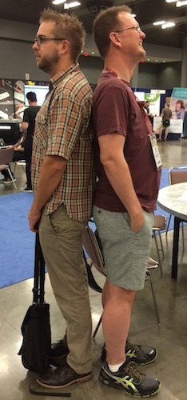

You May Recall
John Venable from NIST presented last month.

(he is exceptionally tall)
True Story...
I am taller than John.
(in certain circumstances)
What Are We Trying To Do
In the process of moving from CommonSpot to Drupal. We need to meet or exceed CommonSpot's features.
- Fieldable files
- Revisionable files
- Add files from and insert files into the WYSIWYG
How are we doing it
Media module and...
- First implementation: John let's just use a file field
- Actual first implementation: custom module(s)
- Current implementation: Media 7.x-2.0, and others, complemented by custom modules
Living Dangerously
You're about to hear stuff like "dev branch" and "patch" - Media handling in Drupal is in flux.
Don't do this unless you are comfortable blowing things up and fixing it.
Contrib Modules
- Media 7.x-2.0-alpha3
- File Entiy 7.x-2.0-alpha3
- File entity Revisions 7.x-1.x-dev (and patches)
- Rabbit Hole (files) 7.x-2.23 (and patch)
- WYSIWYG 7.x-2.x-dev
Media
- Provides a framework for handling files, images, videos, etc
- Using 2.0-alpha over 1.x stable because of the file entity module
- Dev branch tends to break frequently
"...New is always better[, Ted]."
File Entity
- Adds an entity for files. Allows you to field files like you would nodes, users, etc
- Using 2.0-alpha; it is the most stable release
Rabbit Hole
-
Allows us to redirect anonymous users directly to the file from the file entity
- Doesn't tie us to a layout solution (panels could do this too)
-
Using latest stable and the following patch:
Custom Modules
- File Entity Link Display Mode
- Media Browser Override
File Entity Link Display Mode
Adds a display mode for file entities that links to the file entity, not the file itself.
Media Browser Override
Overrides (as cleanly as possible) some of Media 2's media browser WYSIWYG plugin functionality.
- Default to WYSIWYG display format
- Skip view mode form in the media browser
- Alter media browser plugin js
How everything fits together
-
Media provides the ground work
- Media browser WYSIWYG plugin (part of Media 2) allows us to add and insert media from a wyswiwyg
- File Entity and File Entity Revisions lets us interact with files like nodes
- Rabbit Hole allows us to have a link to the file that will always (within reason) be correct
- Custom modules fill in the gaps
<shameless-plug>
</shameless-plug>